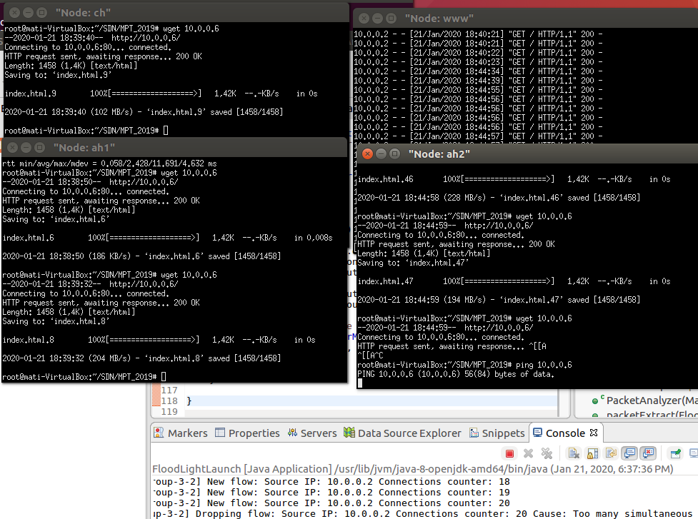

Projekt wykonany w ramach zajęć projektowych z przedmiotu "Sieci Sterowane Programowo".

* UBUNTU 16.04
* Python 3
* Eclipse IDE
* Git
$ sudo apt update
$ sudo apt install ant openjdk-8-jdk
$ sudo service openvswitch-switch start
$ sudo update-alternatives --config java
Następnie należy wybrać Java 8 na potrzeby tego projektu.
Dokumentacja naszego projektu oraz repozytorium na GitHHubie znajduje się pod poniższym linkiem.
Dokumentacja